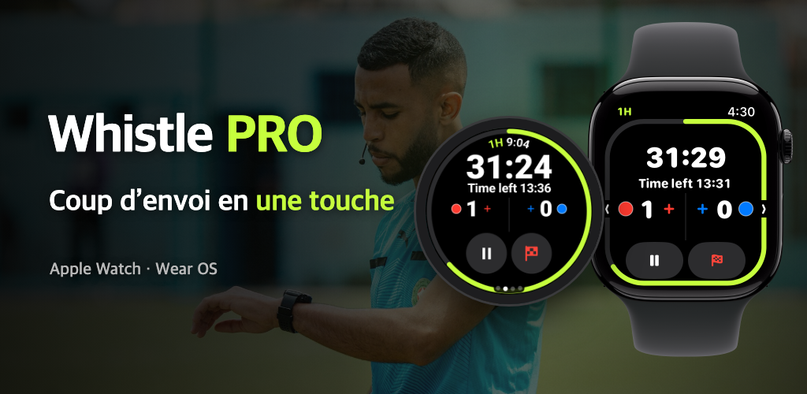

Whistle PRO
Mettez votre montre et entrez sur le terrain.
Chronomètre et carnet de match pour Apple Watch et Wear OS, conçus pour les arbitres de football.

Mettez votre montre et entrez sur le terrain.
Chronomètre et carnet de match pour Apple Watch et Wear OS, conçus pour les arbitres de football.

Football amateur, clubs, championnats de jeunes. Tout le match se gère avec une seule montre, sans téléphone.
Pause et reprise, but ou annulation avec les boutons, la couronne ou la lunette de la montre pendant que vous courez (PRO). Sur Apple Watch et les montres Wear OS comme la Galaxy Watch.
Mi-temps, quart-temps, prolongation et tirs au but. Les arrêts de jeu sont chronométrés à part pour vous proposer un temps additionnel.
Votre poignet vibre juste avant la fin, à la fin de la mi-temps et quand un joueur en exclusion temporaire peut revenir.
Enregistrez buts, avertissements, exclusions et remplacements avec l’équipe et le numéro. Le second avertissement devient automatiquement une exclusion.
Partez du standard FIFA, modifiez la durée, le nombre de joueurs, la limite de remplacements et les exclusions temporaires, puis enregistrez le tout comme modèle.
Fréquence cardiaque, distance, sprints et carte de chaleur des déplacements sont conservés avec le match et enregistrés comme exercice dans l’app Santé (iPhone) ou dans Santé Connect (Android).
À la fin du match, partagez depuis votre téléphone un rapport avec les buts, les cartons, les remplacements et les règles appliquées.
Dans l’onglet [Carte] du détail du match, calez les quatre coins du terrain pour voir votre carte de chaleur sur une photo satellite.
Pour les matchs dont le terrain est calé, transformez vos déplacements en une vidéo de replay de 15 secondes à publier sur les réseaux sociaux.
Choisissez sur la montre les couleurs des maillots des deux équipes avant le coup d’envoi, et corrigez-les sur le téléphone après le match.
L’essentiel pour diriger un match est gratuit ; l’enregistrement et l’analyse sont inclus dans PRO.
Sans abonnement
Mensuel ou annuel · essai gratuit de 7 jours
L’abonnement se souscrit dans l’app du téléphone et se résilie à tout moment dans les réglages de votre compte App Store ou Google Play.
Ni compte ni serveur. Les matchs enregistrés et les données de santé ne circulent qu’entre votre montre et votre téléphone.
Lire la politique de confidentialité